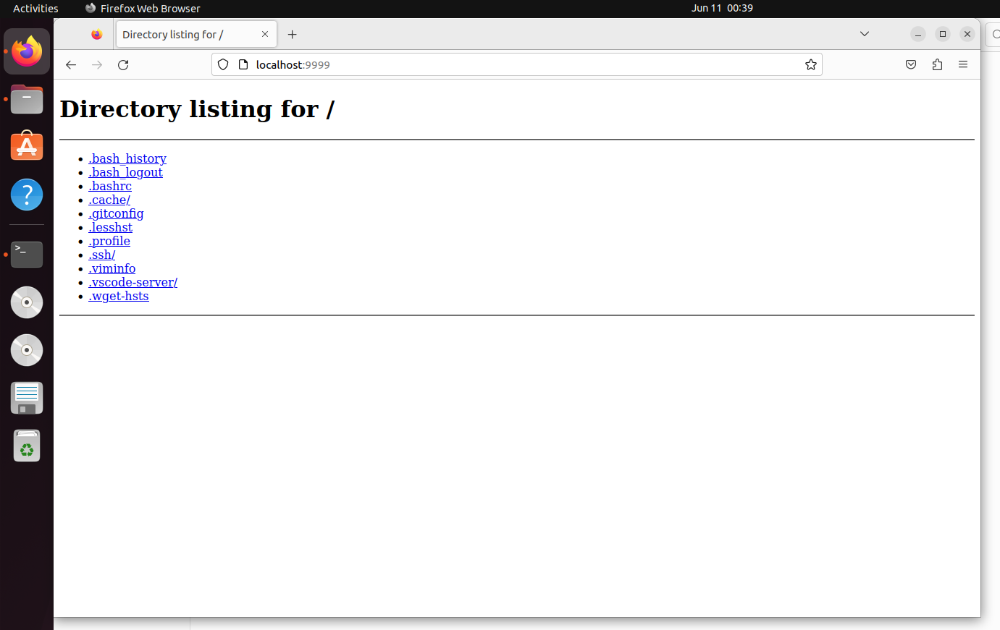

Exercises
Job control
- From what we have seen, we can use some ps aux | grep commands to get our jobs’ pids and then kill them, but there are better ways to do it. Start a sleep 10000 job in a terminal, background it with Ctrl-Z and continue its execution with bg. Now use pgrep to find its pid and pkill to kill it without ever typing the pid itself. (Hint: use the -af flags).
┌─[myc@ubuntu22]─[~/Desktop]
└──╼[23:55:02]$ sleep 10000
^Z
[1]+ Stopped sleep 10000
┌─[Fail][myc@ubuntu22]─[~/Desktop]
└──╼[23:55:11]$ bg
[1]+ sleep 10000 &
┌─[myc@ubuntu22]─[~/Desktop]
└──╼[23:55:14]$ pgrep sleep
2388
┌─[myc@ubuntu22]─[~/Desktop]
└──╼[23:55:23]$ pkill -af sleep
pkill: invalid option -- 'a'
Usage:
pkill [options] <pattern>
Options:
-<sig>, --signal <sig> signal to send (either number or name)
-q, --queue <value> integer value to be sent with the signal
-e, --echo display what is killed
-c, --count count of matching processes
-f, --full use full process name to match
-g, --pgroup <PGID,...> match listed process group IDs
-G, --group <GID,...> match real group IDs
-i, --ignore-case match case insensitively
-n, --newest select most recently started
-o, --oldest select least recently started
-O, --older <seconds> select where older than seconds
-P, --parent <PPID,...> match only child processes of the given parent
-s, --session <SID,...> match session IDs
-t, --terminal <tty,...> match by controlling terminal
-u, --euid <ID,...> match by effective IDs
-U, --uid <ID,...> match by real IDs
-x, --exact match exactly with the command name
-F, --pidfile <file> read PIDs from file
-L, --logpidfile fail if PID file is not locked
-r, --runstates <state> match runstates [D,S,Z,...]
--ns <PID> match the processes that belong to the same
namespace as <pid>
--nslist <ns,...> list which namespaces will be considered for
the --ns option.
Available namespaces: ipc, mnt, net, pid, user, uts
-h, --help display this help and exit
-V, --version output version information and exit
For more details see pgrep(1).
┌─[Fail][myc@ubuntu22]─[~/Desktop]
└──╼[23:55:51]$ pkill -f sleep
[1]+ Terminated sleep 10000
┌─[myc@ubuntu22]─[~/Desktop]
└──╼[23:56:26]$
# WTF? -a dose not exist.
- Say you don’t want to start a process until another completes. How would you go about it? In this exercise, our limiting process will always be sleep 60 &. One way to achieve this is to use the wait command. Try launching the sleep command and having an ls wait until the background process finishes.However, this strategy will fail if we start in a different bash session, since wait only works for child processes. One feature we did not discuss in the notes is that the kill command’s exit status will be zero on success and nonzero otherwise. kill -0 does not send a signal but will give a nonzero exit status if the process does not exist. Write a bash function called pidwait that takes a pid and waits until the given process completes. You should use sleep to avoid wasting CPU unnecessarily.
┌─[myc@ubuntu22]─[~/Desktop]
└──╼[23:56:26]$ sleep 60 &
[1] 2540
┌─[myc@ubuntu22]─[~/Desktop]
└──╼[23:57:42]$ ls -alh | wait; ls
CS110L CS50P CS50-This-is-CS50x
┌─[myc@ubuntu22]─[~/Desktop]
└──╼[23:58:00]$
┌─[myc@ubuntu22]─[~/Desktop]
└──╼[00:00:13]$ vim example.sh
┌─[myc@ubuntu22]─[~/Desktop]
└──╼[00:00:39]$ source example.sh
┌─[myc@ubuntu22]─[~/Desktop]
└──╼[00:02:21]$ pidwait
┌─[myc@ubuntu22]─[~/Desktop]
└──╼[00:02:32]$ sleep 60
^Z
[1]+ Stopped sleep 60
┌─[Fail][myc@ubuntu22]─[~/Desktop]
└──╼[00:03:05]$ bg
[1]+ sleep 60 &
┌─[myc@ubuntu22]─[~/Desktop]
└──╼[00:03:06]$ pgrep sleep
2658
┌─[myc@ubuntu22]─[~/Desktop]
└──╼[00:03:10]$ pidwait 2658
[1]+ Done sleep 60
┌─[myc@ubuntu22]─[~/Desktop]
└──╼[00:04:01]$
function pidwait() {
local pid=$1
while ps -p $pid >/dev/null 2>&1; do
sleep 1
done
}
Terminal multiplexer
- Follow this tmux tutorial and then learn how to do some basic customizations following these steps.
It is so complex! BUT NOW I am already familiar with this tool.
Aliases
- Create an alias dc that resolves to cd for when you type it wrongly.
┌─[myc@ubuntu22]─[~]
└──╼[00:06:34]$ alias dc=cd
┌─[myc@ubuntu22]─[~]
└──╼[00:06:36]$ dc Desktop/
┌─[myc@ubuntu22]─[~/Desktop]
└──╼[00:06:44]$
- Run history | awk '{$1="";print substr($0,2)}' | sort | uniq -c | sort -n | tail -n 10 to get your top 10 most used commands and consider writing shorter aliases for them. Note: this works for Bash; if you’re using ZSH, use history 1 instead of just history.
┌─[myc@ubuntu22]─[~]
└──╼[00:07:05]$ history | awk '{$1="";print substr($0,2)}' | sort | uniq -c | sort -n | tail -n 10
2 line = line ";" $i;
2 pgrep sleep
2 print line;
3 cat /usr/share/dict/words | tr "[:upper:]" "[:lower:]" | grep -E "^([^a]*a){3}.*$" | grep -v "'s$" | sed -E "s/.*([a-z]{2})$/\1/" | sort | uniq -c | sort | tail -n3
3 cd Desktop/
3 curl https://ucr.fbi.gov/crime-in-the-u.s/2016/crime-in-the-u.s.-2016/topic-pages/tables/table-1 | sed -n '/<table/,/<\/table/p' | sed -n '/<tr>/,/<\/tr>/p' > data.txt
4 }
4 su
5 curl 'https://stats.wikimedia.org/EN/TablesWikipediaZZ.htm' | sed -n "/table1/,/<\/table>/p" | grep "<tr" | sed -E 's/(<[^>]*>)+/ /g' | sed 's/ /-/g;s/ / /g' > data.txt
5 ls
┌─[myc@ubuntu22]─[~]
└──╼[00:07:18]$
Dotfiles
Let’s get you up to speed with dotfiles.
- Create a folder for your dotfiles and set up version control.
- Add a configuration for at least one program, e.g. your shell, with some customization (to start off, it can be something as simple as customizing your shell prompt by setting $PS1).
- Set up a method to install your dotfiles quickly (and without manual effort) on a new machine. This can be as simple as a shell script that calls ln -s for each file, or you could use a specialized utility.
- Test your installation script on a fresh virtual machine.
- Migrate all of your current tool configurations to your dotfiles repository.
- Publish your dotfiles on GitHub.
ALL QUESTION ARE SO EASY! I will redo this assignment once I finish writing more dotfiles.
$ mkdir ~/gits/dotfiles # gits目录是创建用来存放所有git及github仓库的目录
$ git init ~/gits/dotfiles # 将本机的配置文件，如 .vimrc/.bashrc/.tmux.conf 等复制进该目录
$ git clone
$ vim autoconfig.sh # 创建脚本
$ cat autoconfig.sh
#!/bin/bash
files=$(ls -a $1 | grep -E '.[^.]+' |grep -v .git)
# 去掉 ls -a 返回结果中的 ". .. .git"
for file in `echo $files`; do
ln -s $1/$file ~/$file # 创建软链接
done
$ source autoconfig.sh
# 执行脚本，为dotfiles中的配置文件创建在主目录 ~ 下的软链接
Remote Machines
Install a Linux virtual machine (or use an already existing one) for this exercise. If you are not familiar with virtual machines check out this tutorial for installing one.
- Go to ~/.ssh/ and check if you have a pair of SSH keys there. If not, generate them with ssh-keygen -o -a 100 -t ed25519. It is recommended that you use a password and use ssh-agent , more info here.
┌─🌵[myc@ubuntu22]─[~]
└──╼[00:33:00]$ ssh-keygen -o -a 100 -t ed25519
┌─🌵[myc@ubuntu22]─[~]
└──╼[00:34:04]$ ls .ssh
id_ed25519 id_ed25519.pub id_rsa id_rsa.pub known_hosts known_hosts.old
- Edit .ssh/config to have an entry as follows
Host vm
User username_goes_here
HostName ip_goes_here
IdentityFile ~/.ssh/id_ed25519
LocalForward 9999 localhost:8888
I use UbuntuDesktop to connet Ubuntu Server. :)
Host vm
User myc
HostName 192.168.85.131
IdentityFile ~/.ssh/id_ed25519
LocalForward 9999 localhost:8888
- Use ssh-copy-id vm to copy your ssh key to the server.
┌─🌵[myc@ubuntu22]─[~]
└──╼[00:35:36]$ ssh-copy-id vm
The authenticity of host '192.168.85.131 (192.168.85.131)' can't be established.
ED25519 key fingerprint is SHA256:6KgPSnRcSlySxeuU1QmuFjnw2qvYvYGEUkpNFoXZrXM.
This key is not known by any other names
Are you sure you want to continue connecting (yes/no/[fingerprint])? yes
/usr/bin/ssh-copy-id: INFO: attempting to log in with the new key(s), to filter out any that are already installed
/usr/bin/ssh-copy-id: INFO: 2 key(s) remain to be installed -- if you are prompted now it is to install the new keys
myc@192.168.85.131's password:
Number of key(s) added: 2
Now try logging into the machine, with: "ssh 'vm'"
and check to make sure that only the key(s) you wanted were added.
┌─🌵[myc@ubuntu22]─[~]
└──╼[00:36:00]$ ssh vm
Welcome to Ubuntu 22.04.2 LTS (GNU/Linux 5.15.0-60-generic x86_64)
* Documentation: https://help.ubuntu.com
* Management: https://landscape.canonical.com
* Support: https://ubuntu.com/advantage
This system has been minimized by removing packages and content that are
not required on a system that users do not log into.
To restore this content, you can run the 'unminimize' command.
Last login: Sat Jun 10 16:17:04 2023
To run a command as administrator (user "root"), use "sudo <command>".
See "man sudo_root" for details.
myc@ubuntu22[16:36:23]:~$
- Start a webserver in your VM by executing python -m http.server 8888. Access the VM webserver by navigating to http://localhost:9999 in your machine.
myc@ubuntu22[16:38:04]:~$ python3 -m http.server 8888
Serving HTTP on 0.0.0.0 port 8888 (http://0.0.0.0:8888/) ...
127.0.0.1 - - [10/Jun/2023 16:39:06] "GET / HTTP/1.1" 200 -
127.0.0.1 - - [10/Jun/2023 16:39:06] code 404, message File not found
127.0.0.1 - - [10/Jun/2023 16:39:06] "GET /favicon.ico HTTP/1.1" 404 -
 5. Edit your SSH server config by doing sudo vim /etc/ssh/sshd_config and disable password authentication by editing the value of PasswordAuthentication. Disable root login by editing the value of PermitRootLogin. Restart the ssh service with sudo service sshd restart. Try sshing in again.
It is not recommended to use root login. 6. (Challenge) Install mosh in the VM and establish a connection. Then disconnect the network adapter of the server/VM. Can mosh properly recover from it?
After disconnecting the network adapter, neither SSH nor Mosh connections can be restored actively (the virtual machine's network connection method needs to be modified again).
- (Challenge) Look into what the -N and -f flags do in ssh and figure out a command to achieve background port forwarding.
-N Do not execute a remote command. This is useful for just forwarding ports.
-f Requests ssh to go to background just before command execution. This is useful if ssh is going to ask for passwords or passphrases, but the user wants it in the background. This implies -n. The recommended way to start X11 programs at a remote site is with something like ssh -f host xterm.
If the ExitOnForwardFailure configuration option is set to ``yes'', then a client started with -f will wait for all remote port forwards to be successfully established before placing itself in the background.
ssh -fN -L 9999:localhost:8888 pi
I have almost completed all the issues mentioned above on Huawei Cloud and Raspberry Pi, so I will address them again when reconfiguring the Raspberry Pi in the future.